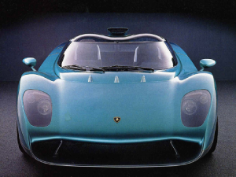

|  |
Lamborghini Zagato Raptor
|
The Lamborghini Zagato Raptor is a one-off concept car developed jointly by Lamborghini and the Italian coachbuilder Zagato. The car was first unveiled at the Geneva Motor Show in 1996 and was intended to be a showcase of Zagato's design skills and Lamborghini's performance engineering.
The Zagato Raptor was based on the Lamborghini Diablo platform and featured a unique carbon fiber body with an aerodynamic design inspired by the world of aviation. The car had a long and low profile, with a sharply angled front end and a wide rear stance. It also featured scissor doors, which opened upwards to reveal the luxurious leather and Alcantara interior.
Powering the Zagato Raptor was a 5.7-liter V12 engine, which was capable of producing 492 horsepower and 428 lb-ft of torque. The engine was mated to a five-speed manual transmission, which allowed for a sporty and engaging driving experience.
The Zagato Raptor was never intended for production, but it remains a highly sought-after collector's item and a testament to the unique partnership between Lamborghini and Zagato. It also showcased Lamborghini's commitment to pushing the boundaries of design and engineering, and remains an important piece of the brand's history.